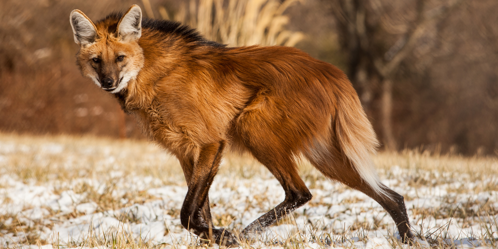

Sloths-James Dickey
Sloths are sluggish tree dwellers that live in Central and South America. Their ancestors lived in North America but they migrated to warmer climates. They generally sleep about 15 to 20 hours a day and move only forty yards per day. They live in the trees of rainforests. The only time they leave the trees is to go to the bathroom and to take a swim. They live quite a leisurely life.
Over the course of time, sloths have decreased in size. They used to be huge creatures such as the Shasta Ground Sloth. Classified as folivores, Sloths live off of the tough leaves of South American rainforests. This has made them evolve to have a four part stomach that digests the leaves with bacteria. They also eat fruit and insects.
Management of sloths is a tricky deal because they have so many threats. Deforestation, predators, and human encroachment are among the most prominent threats. There are some great organizations that help sloths recuperate repopulate, such as the Sloth Conservation Foundation. These organizations are vital in wild sloths’ populations remaining stable. Another conservation idea would be to decrease deforestation through legal action.
Andean Condor-John Richardson
The Andean Condor's habitat resides in the Andean condor is found in South America in the Andes, including the Santa Marta Mountains. In the north, its range begins in Venezuela and Colombia, where it is extremely rare then continues south along the Andes in Ecuador, Peru, and Chile, through Bolivia and western Argentina to the Tierra del Fuego. They prefer open grasslands and alpines because they are able to spot their prey more easily
Ways to help conserve the Andean Condor is to focus on reducing the use of pesticides on crops. The chemicals from the pesticides travel throughout the food chain, poisoning the condors and end up killing them. With the use of less pesticides, this will result in less deaths. Another way to help preserve the Andean Condors is to try to prevent deforestation. As more and more forests are being cut down for lumber, it is slowly diminishing the habitats of the condors habitats. They are having less and less space to re populate and create habitats, hindering their growth. By trying to cut down on deforestation this would allow the growth of the condors to further grow. Lastly there need to be more laws and more enforcement of the present laws about hunting the Andean Condors. The condors almost went extinct due to over hunting from farmers when they thought they were killing their livestock. This almost lead to their extinction but thanks to hunting laws it has helped with the growth of the Andean Condor but in some places they are not enforced as well and hunting is still happening. There needs to be a more strict enforcement of these laws to overall help the Andean Condor population.

Maned Wolf-Marianna Spiotta
The maned wolf is found in central South America, from north-eastern Brazil, south through Paraguay and west into Peru. It is also found in small areas of Argentina and Bolivia, and may still be present in some areas of Uruguay. The maned wolf prefers open habitats in tall grasslands, edges of forests and even swampy areas. In Brazil, this species is found in the cerrado, a large area of open woodland and savannah that is one of the world's most important “hot-spots” of biodiversity
The main threat to the maned wolf is the drastic reduction in its habitat mostly due to its conversion into agricultural land. In addition maned wolves are often killed on highways, frequently on those which border protected areas. Road kills are responsible for the death of approximately half the annual production of pups. There is also a threat from domestic dogs, which chase maned wolves and may also pass on disease.
Because most of the threats to the Maned wolf are environmental, much of the focus is directed towards educating communities on their effects on the environment and conservation. There are also captive breeding programs in place to maintain a healthy population in zoos. The MWSSP is a management program involving all 28 North American zoos holding maned wolves in order to learn more about them.
Magellanic Penguin-Charlotte Irvin
The Magellanic penguin is specifically a South American penguin, residing only in that region (not including those in captivity). They breed in coastal Argentina,Chile and the Falkland island, with some often times migrating to brazil for the warmest climate. They prefer areas that are surrounded by waters with depths of 20m to 50m deep, because of the constant food supply of things like catfish and squid. They often breed in burrows where digging is possible, and if not they do it on surface area or under bushes. Groups of these penguins form in low forest to grassland or bare rock areas.
This specific breed of penguin is considered to be threatened mainly due to the large amount of oil spills in their habitats. Oil spills alone kill around 20,000 adult penguins a year. Another big threat is climate change, which has displaced a majority of the fishes these penguins feed off of. Which in turn makes them have to swim an extra 40 km, leaving them more vulnerable to larger predators.
Cleaning up oil spills is a big factor on keeping these penguins alive. The WCS has spent over 30 years monitoring these penguins, by helping improve the management of commercial fisheries and offshore drilling including the management and transport of oil in the southwest atlantic.
Manatee-Joseph Wargo
Manatees, which are also known as sea cows, are slow moving aquatic herbivores. As mammals of the Sirenia order, manatees can grow up to twelve hundred pounds. Manatees inhabit marshy and coastal and river areas. A manatee’s niche is as a slow moving herbivore who eats up algae and coastal plants. They often “graze” upon the sea floor, tearing up roots and eating plants that live on the seafloor. They are peaceful creatures, and have very few predators.
Manatees can be found in many different parts of the world. There are three significant groups of manatees that live on our earth. The first can be found along the western coast of africa, and lives in both fresh and saltwater. Another population is found in the Caribbean and Gulf of Mexico. These manatees also live in both salt and fresh water, and can be found as far north as the coast of Georgia. There is a final population of freshwater only manatees. They live in the Amazon River and its tributaries.
The preservation of manatees has been a large issue, particularly in the state of Florida. While it is very difficult to protect against red tides, it is significantly easier to help with the problem of human contamination. Currently, there have been many reserves created (such as the Three Sisters Spring), where manatees can live in peace, without the threat of human involvement. These plans have been effective, but I propose that we take a further step, and increase the number of reserves. Manatees are unique and and beautiful animals. They deserve places to live free, without a constant threat of death. The more space we can create for manatees the better.